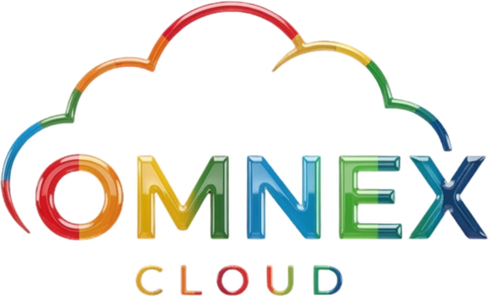

Un seul plan de contrôle pour vos domaines, votre DNS, vos sites, votre cloud, votre stockage, votre e-mail, votre sécurité et votre facturation.
Domaines ici, DNS là, hébergement, cloud, stockage, e-mail… chaque brique a son propre outil, son propre compte, sa propre facturation.
Impossible de répondre à « où est ma donnée, qui y accède, qu'est-ce qui expire, combien ça coûte » sans recoller des dizaines de tableaux de bord.
Sécurité éparpillée, secrets dispersés, accès non révoqués, et un lock-in chez chaque fournisseur.
Résultat : une équipe qui gère des outils au lieu de construire et d'exploiter.
Une plateforme unique où chaque ressource — un domaine, un enregistrement DNS, un site, un serveur, un fichier, une facture — devient un objet du système, dans un seul modèle de données, derrière une seule interface.
Un seul déploiement Laravel avec des frontières de modules dures — découpable en services plus tard, sans réécriture.
Registrar, DNS, stockage, cloud, e-mail, paiement : chaque système externe est derrière une interface. Ajouter un provider = une classe, pas un chantier.
Les modules communiquent via un bus d'événements typés. L'audit, les notifications et l'automatisation sont des effets de bord, jamais des appels directs.
Toute capacité est exposée en API REST versionnée. L'interface React n'est qu'un consommateur parmi d'autres.
Comptes, organisations, invitations, rôles/permissions, MFA TOTP + codes de récupération, connexion GAFAM.
Tableau de bord temps réel, navigation, Ctrl+K, activité, sécurité, i18n français/anglais.
Recherche/enregistrement/renouvellement/transfert, DNS validé avec historique et rollback, DNSSEC, suivi de propagation.
Stockage S3-compatible derrière une abstraction, dossiers, versions, corbeille, quotas, URL signées.
Le tout derrière des providers sandbox déterministes d'abord, puis de vrais providers (Namecheap/OVH, S3/R2/MinIO…) sans toucher au code métier.
DomainProviderInterface.Votre propre cloud, sur un stockage S3-compatible que vous choisissez.
StorageProviderInterface : sandbox + S3 (AWS, R2, MinIO, OVH) — signature AWS SigV4 native, zéro SDK imposé.Diagnostiquer, recommander, réviser, appliquer — jamais d'action destructive silencieuse.
Déclencheur → condition → action : tout votre parc s'orchestre seul.
Apps, plugins, thèmes, intégrations, agents IA — la distribution, pas une réécriture.
La cible : un système d'exploitation où l'infrastructure devient programmable, observable et automatisable — souveraineté des données, aucun lock-in fournisseur.
Brancher les vrais providers (registrar, DNS, stockage), livrer les Sites (Phase 5), puis la facturation, la sécurité et le cloud.